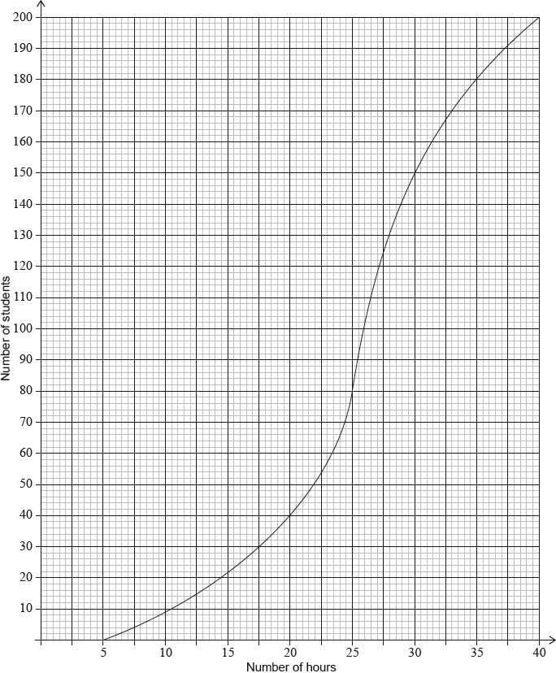
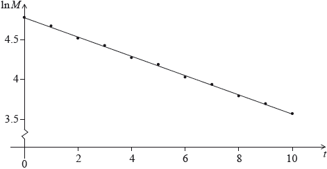

SL Paper 2
Consider the expansion of \({\left( {\frac{{{x^3}}}{2} + \frac{p}{x}} \right)^8}\). The constant term is \(5103\). Find the possible values of \(p\).
Expand \(\sum\limits_{r = 4}^7 {{2^r}} \) as the sum of four terms.
(i) Find the value of \(\sum\limits_{r = 4}^{30} {{2^r}} \) .
(ii) Explain why \(\sum\limits_{r = 4}^\infty {{2^r}} \) cannot be evaluated.
Expand \({(x - 2)^4}\) and simplify your result.
Find the term in \({x^3}\) in \((3x + 4){(x - 2)^4}\) .
Let \(f(x) = {\log _3}\frac{x}{2} + {\log _3}16 - {\log _3}4\) , for \(x > 0\) .
Show that \(f(x) = {\log _3}2x\) .
Find the value of \(f(0.5)\) and of \(f(4.5)\) .
The function f can also be written in the form \(f(x) = \frac{{\ln ax}}{{\ln b}}\) .
(i) Write down the value of a and of b .
(ii) Hence on graph paper, sketch the graph of f , for \( - 5 \le x \le 5\) , \( - 5 \le y \le 5\) , using a scale of 1 cm to 1 unit on each axis.
(iii) Write down the equation of the asymptote.
Write down the value of \({f^{ - 1}}(0)\) .
The point A lies on the graph of f . At A, \(x = 4.5\) .
On your diagram, sketch the graph of \({f^{ - 1}}\) , noting clearly the image of point A.
Consider the expansion of \({\left( {2{x^3} + \frac{b}{x}} \right)^8} = 256{x^{24}} + 3072{x^{20}} + \ldots + k{x^0} + \ldots \) .
Find b.
Find k.
In an arithmetic series, the first term is −7 and the sum of the first 20 terms is 620.
Find the common difference.
Find the value of the 78th term.
The following table shows values of ln x and ln y.
![]()
The relationship between ln x and ln y can be modelled by the regression equation ln y = a ln x + b.
Find the value of a and of b.
Use the regression equation to estimate the value of y when x = 3.57.
The relationship between x and y can be modelled using the formula y = kxn, where k ≠ 0 , n ≠ 0 , n ≠ 1.
By expressing ln y in terms of ln x, find the value of n and of k.
Consider the arithmetic sequence 3, 9, 15, \(\ldots \) , 1353 .
Write down the common difference.
Find the number of terms in the sequence.
Find the sum of the sequence.
The first term of an infinite geometric sequence is 4. The sum of the infinite sequence is 200.
Find the common ratio.
Find the sum of the first 8 terms.
Find the least value of n for which Sn > 163.
An arithmetic sequence is given by \(5\), \(8\), \(11\), ….
(a) Write down the value of \(d\) .
(b) Find
(i) \({u_{100}}\) ;
(ii) \({S_{100}}\) .
(c) Given that \({u_n} = 1502\) , find the value of \(n\) .
Write down the value of \(d\) .
Find
(i) \({u_{100}}\) ;
(ii) \({S_{100}}\) .
Given that \({u_n} = 1502\) , find the value of \(n\) .
Consider the expansion of \({\left( {{x^2} + \frac{2}{x}} \right)^{10}}\).
Write down the number of terms of this expansion.
Find the coefficient of \({x^8}\).
Consider an infinite geometric sequence with \({u_1} = 40\) and \(r = \frac{1}{2}\) .
(i) Find \({u_4}\) .
(ii) Find the sum of the infinite sequence.
Consider an arithmetic sequence with n terms, with first term (\( - 36\)) and eighth term (\( - 8\)) .
(i) Find the common difference.
(ii) Show that \({S_n} = 2{n^2} - 38n\) .
The sum of the infinite geometric sequence is equal to twice the sum of the arithmetic sequence. Find n .
Consider the infinite geometric sequence \(3000{\text{, }}- 1800{\text{, }}1080{\text{, }} - 648, \ldots \) .
Find the common ratio.
Find the 10th term.
Find the exact sum of the infinite sequence.
The third term in the expansion of \({(x + k)^8}\) is \(63{x^6}\). Find the possible values of \(k\).
Consider the expansion of \({(3{x^2} + 2)^9}\) .
Write down the number of terms in the expansion.
Find the term in \({x^4}\) .
Consider the expansion of \({(x + 3)^{10}}\).
Write down the number of terms in this expansion.
Find the term containing \({x^3}\).
The constant term in the expansion of \({\left( {\frac{x}{a} + \frac{{{a^2}}}{x}} \right)^6}\) , where \(a \in \mathbb{R}\) is \(1280\). Find \(a\) .
Ten students were surveyed about the number of hours, \(x\), they spent browsing the Internet during week 1 of the school year. The results of the survey are given below.
\[\sum\limits_{i = 1}^{10} {{x_i} = 252,{\text{ }}\sigma = 5{\text{ and median}} = 27.} \]
During week 4, the survey was extended to all 200 students in the school. The results are shown in the cumulative frequency graph:

Find the mean number of hours spent browsing the Internet.
During week 2, the students worked on a major project and they each spent an additional five hours browsing the Internet. For week 2, write down
(i) the mean;
(ii) the standard deviation.
During week 3 each student spent 5% less time browsing the Internet than during week 1. For week 3, find
(i) the median;
(ii) the variance.
(i) Find the number of students who spent between 25 and 30 hours browsing the Internet.
(ii) Given that 10% of the students spent more than k hours browsing the Internet, find the maximum value of \(k\).
The first three terms of an arithmetic sequence are 36, 40, 44,….
(i) Write down the value of d .
(ii) Find \({u_8}\) .
(i) Show that \({S_n} = 2{n^2} + 34n\) .
(ii) Hence, write down the value of \({S_{14}}\) .
The mass \(M\) of a decaying substance is measured at one minute intervals. The points \((t,{\text{ }}\ln M)\) are plotted for \(0 \leqslant t \leqslant 10\), where \(t\) is in minutes. The line of best fit is drawn. This is shown in the following diagram.

The correlation coefficient for this linear model is \(r = - 0.998\).
State two words that describe the linear correlation between \(\ln M\) and \(t\).
The equation of the line of best fit is \(\ln M = - 0.12t + 4.67\). Given that \(M = a \times {b^t}\), find the value of \(b\).
An arithmetic sequence, \({u_1}{\text{, }}{u_2}{\text{, }}{u_3} \ldots ,\) has \(d = 11\) and \({u_{27}} = 263\) .
Find \({u_1}\).
(i) Given that \({u_n} = 516\) , find the value of n .
(ii) For this value of n , find \({S_n}\) .
In an arithmetic sequence \({u_{10}} = 8,{\text{ }}{u_{11}} = 6.5\).
Write down the value of the common difference.
Find the first term.
Find the sum of the first 50 terms of the sequence.
The sum of the first three terms of a geometric sequence is \(62.755\), and the sum of the infinite sequence is \(440\). Find the common ratio.
The first two terms of a geometric sequence \({u_n}\) are \({u_1} = 4\) and \({u_2} = 4.2\).
(i) Find the common ratio.
(ii) Hence or otherwise, find \({u_5}\).
Another sequence \({v_n}\) is defined by \({v_n} = a{n^k}\), where \(a,{\text{ }}k \in \mathbb{R}\), and \(n \in {\mathbb{Z}^ + }\), such that \({v_1} = 0.05\) and \({v_2} = 0.25\).
(i) Find the value of \(a\).
(ii) Find the value of \(k\).
Find the smallest value of \(n\) for which \({v_n} > {u_n}\).
Find the term \({x^3}\) in the expansion of \({\left( {\frac{2}{3}x - 3} \right)^8}\) .
In the expansion of \(a{x^3}{(2 + ax)^{11}}\), the coefficient of the term in \({x^5}\) is 11880. Find the value of \(a\).
Consider the expansion of \({(2x + 3)^8}\).
Write down the number of terms in this expansion.
Find the term in \({x^3}\).
Let \(f(x) = {({x^2} + 3)^7}\). Find the term in \({x^5}\) in the expansion of the derivative, \(f’(x)\).
In an arithmetic sequence \({u_1} = 7\) , \({u_{20}} = 64\) and \({u_n} = 3709\) .
Find the value of the common difference.
Find the value of n .
Find the term in \({x^4}\) in the expansion of \({\left( {3{x^2} - \frac{2}{x}} \right)^5}\) .
A population of rare birds, \({P_t}\), can be modelled by the equation \({P_t} = {P_0}{{\text{e}}^{kt}}\), where \({P_0}\) is the initial population, and \(t\) is measured in decades. After one decade, it is estimated that \(\frac{{{P_1}}}{{{P_0}}} = 0.9\).
(i) Find the value of \(k\).
(ii) Interpret the meaning of the value of \(k\).
Find the least number of whole years for which \(\frac{{{P_t}}}{{{P_0}}} < 0.75\).
Consider the expansion of \({x^2}{\left( {3{x^2} + \frac{k}{x}} \right)^8}\). The constant term is \({\text{16 128}}\).
Find \(k\).
In a geometric series, \({u_1} = \frac{1}{{81}}\) and \({u_4} = \frac{1}{3}\) .
Find the value of \(r\) .
Find the smallest value of n for which \({S_n} > 40\) .
Find the term in \({x^6}\) in the expansion of \({(x + 2)^9}\).
Hence, find the term in \({x^7}\) in the expansion of \(5x{(x + 2)^9}\).
The first three terms of an arithmetic sequence are \({u_1} = 0.3,{\text{ }}{u_2} = 1.5,{\text{ }}{u_3} = 2.7\).
Find the common difference.
Find the 30th term of the sequence.
Find the sum of the first 30 terms.
In an arithmetic sequence, \({S_{40}} = 1900\) and \({u_{40}} = 106\) . Find the value of \({u_1}\) and of d .
In an arithmetic series, the first term is –7 and the sum of the first 20 terms is 620.
Find the common difference.
Find the value of the 78th term.
The first term of a geometric sequence is 200 and the sum of the first four terms is 324.8.
Find the common ratio.
The first term of a geometric sequence is 200 and the sum of the first four terms is 324.8.
Find the tenth term.
The first three terms of an arithmetic sequence are 5 , 6.7 , 8.4 .
Find the common difference.
The first three terms of an arithmetic sequence are 5 , 6.7 , 8.4 .
Find the 28th term of the sequence.
The first three terms of an arithmetic sequence are \(5\) , \(6.7\) , \(8.4\) .
Find the sum of the first 28 terms.
In a geometric sequence, the fourth term is 8 times the first term. The sum of the first 10 terms is 2557.5. Find the 10th term of this sequence.
In the expansion of \({(3x - 2)^{12}}\) , the term in \({x^5}\) can be expressed as \(\left( {\begin{array}{*{20}{c}}
{12}\\
r
\end{array}} \right) \times {(3x)^p} \times {( - 2)^q}\) .
(a) Write down the value of \(p\) , of \(q\) and of \(r\) .
(b) Find the coefficient of the term in \({x^5}\) .
Write down the value of \(p\) , of \(q\) and of \(r\) .
Find the coefficient of the term in \({x^5}\) .
The first three terms of a geometric sequence are \({u_1} = 0.64,{\text{ }}{u_2} = 1.6\), and \({u_3} = 4\).
Find the value of \(r\).
Find the value of \({S_6}\).
Find the least value of \(n\) such that \({S_n} > 75\,000\).
The nth term of an arithmetic sequence is given by \({u_n} = 5 + 2n\) .
Write down the common difference.
(i) Given that the nth term of this sequence is 115, find the value of n .
(ii) For this value of n , find the sum of the sequence.
The third term in the expansion of \({(2x + p)^6}\) is \(60{x^4}\) . Find the possible values of p .
Ramiro walks to work each morning. During the first minute he walks \(80\) metres. In each subsequent minute he walks \(90\% \) of the distance walked during the previous minute.
The distance between his house and work is \(660\) metres. Ramiro leaves his house at 08:00 and has to be at work by 08:15.
Explain why he will not be at work on time.
Let \(f\left( x \right) = {{\text{e}}^{2\,{\text{sin}}\left( {\frac{{\pi x}}{2}} \right)}}\), for x > 0.
The k th maximum point on the graph of f has x-coordinate xk where \(k \in {\mathbb{Z}^ + }\).
Given that xk + 1 = xk + a, find a.
Hence find the value of n such that \(\sum\limits_{k = 1}^n {{x_k} = 861} \).
Consider the expansion of \({\left( {2x + \frac{k}{x}} \right)^9}\), where k > 0 . The coefficient of the term in x3 is equal to the coefficient of the term in x5. Find k.
Let \(f(x) = {x^3} - 4x + 1\) .
Expand \({(x + h)^3}\) .
Use the formula \(f'(x) = \mathop {\lim }\limits_{h \to 0} \frac{{f(x + h) - f(x)}}{h}\) to show that the derivative of \(f(x)\) is \(3{x^2} - 4\) .
The tangent to the curve of f at the point \({\text{P}}(1{\text{, }} - 2)\) is parallel to the tangent at a point Q. Find the coordinates of Q.
The graph of f is decreasing for \(p < x < q\) . Find the value of p and of q.
Write down the range of values for the gradient of \(f\) .
Consider a geometric sequence where the first term is 768 and the second term is 576.
Find the least value of \(n\) such that the \(n\)th term of the sequence is less than 7.
A city is concerned about pollution, and decides to look at the number of people using taxis. At the end of the year 2000, there were 280 taxis in the city. After n years the number of taxis, T, in the city is given by\[T = 280 \times {1.12^n} .\]
(i) Find the number of taxis in the city at the end of 2005.
(ii) Find the year in which the number of taxis is double the number of taxis there were at the end of 2000.
At the end of 2000 there were \(25600\) people in the city who used taxis.
After n years the number of people, P, in the city who used taxis is given by\[P = \frac{{2560000}}{{10 + 90{{\rm{e}}^{ - 0.1n}}}} .\](i) Find the value of P at the end of 2005, giving your answer to the nearest whole number.
(ii) After seven complete years, will the value of P be double its value at the end of 2000? Justify your answer.
Let R be the ratio of the number of people using taxis in the city to the number of taxis. The city will reduce the number of taxis if \(R < 70\) .
(i) Find the value of R at the end of 2000.
(ii) After how many complete years will the city first reduce the number of taxis?